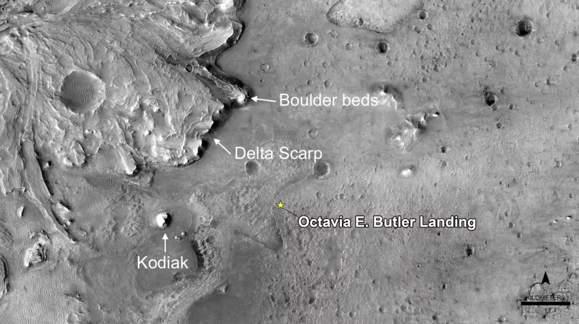
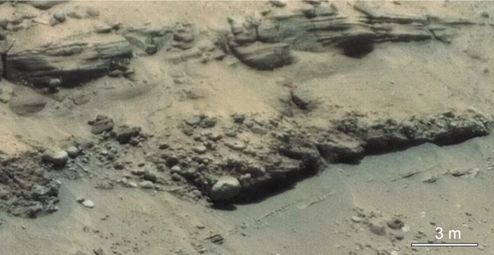

ဒီ Perseverance စူးစမ်းရေးယာဉ် ကနေ ရောက်ခါစက ရိုက်ကူးထားခဲ့တဲ့ ဓါတ်ပုံတွေကို ပညာရှင်တွေက အသေးစိတ် စစ်ဆေးမှုတွေ ပြုလုပ်ခဲ့ပါတယ်။ သူတို့ စစ်ဆေးတွေ့ရှိချက် အဖြေကို သုတေသန ဂျာနယ်တစ်စောင်မှာ တင်ပြခဲ့ ကြပါတယ်။ သူတို့ရဲ့ သုတေသန စာတမ်းအရ ဒီယူဆချက်ဟာ မှန်ကန်တယ်လို့ ဆိုပါတယ်။

“ကျွန်တော်တို့ ဆင်းပြီး စူးစမ်းမှု ပြုလုပ်ပြီး အထောက်အထား မပြနိုင်မီအထိ ဒီတွင်းကြီးဟာ ရေကန်ဟုတ်မဟုတ် အငြင်းပွားနေခဲ့တာပါ” လို့ သူက ဆက်ပြောပါတယ်။
အနည်ကျအလွှာများ
ဒီ ဒေါ်လာ ၂.၇ ဘီလီယံ ကုန်ကျတဲ့ မားစ်လေ့လာရေးယာဉ်ကို လွှတ်တင်ခဲ့စဉ်က ရည်ရွယ်ချက် နှစ်ခုနဲ့ လွှတ်တင်ခဲ့တာပါ။ ပထမ တခုက အင်္ဂါဂြိုလ်ပေါ်မှာ အတိတ်က သက်ရှိတွေ ရှင်သန်ခဲ့တယ်ဆိုတဲ့ အထောက်အထား ရှာဖို့ဖြစ်ပြီး နောက်တခုကတော့ ကမ္ဘာကို ပြန်ပို့ဖို့ မြေသားနဲ့ ကျောက်သား နမူနာတွေ တူးဖေါ်စုဆောင်းဖို့ပဲ ဖြစ်ပါတယ်။
ယဇီရို ချိုင့်ဝှမ်း (ဥက္ကာတွင်း) ကြီးဟာ ဒီရည်မှန်းချက် အောင်မြင်ဖို့ စူးစမ်းလေ့လာဖို့ အကောင်းဆုံး အရပ်ဒေသလို့ ယူဆကြပါတယ်။ အရင် လွှတ်တင်ခဲ့တဲ့ မားစ်အကြိုထောက်လှမ်းရေး ဂြိုလ်ပတ်ယာဉ် (NASA’s Mars Reconnaissance Orbiter) က ရိုက်ကူးထားတဲ့ ဓါတ်ပုံတွေအရ ဒီချိုင့်ဝှမ်းကြီးထဲမှာ ယပ်တောင်နဲ့တူတဲ့ မြေမျက်နှာ သွင်ပြင်တွေ တွေ့ရှိခဲ့ရပါတယ်။ ဒီ ယပ်တောင်ပုံဟာ အရင် နှစ် သန်း ၃,၇၀၀ ခန့်က မြစ်ဝကျွန်းပေါ် ဒေသ ဖြစ်ခဲ့တယ်လို့ ယူဆကြပါတယ်။ ဒီနေရာမှာ မြစ်က အနယ်တွေ ပို့ချတာကြောင့် ဒီ နှုန်းတင်မြေနုတွေထဲမှာ ယခင် သက်ရှိတွေရဲ့ ရုပ်ကြွင်းတွေ ရှာဖို့ အသင့်တော်ဆုံး ဖြစ်မယ်လို့ သုံးသပ်ကြပါတယ်။
အခုတင်ပြတဲ့ သုတေသန စာတမ်းမှာ မားစ်လေ့လာရေးယာဉ်က ရောက်ရောက်ခြင်း ရိုက်ကူးထားတဲ့ ပုံတွေကို အသေးစိတ် လေ့လာပြီး တင်ပြထားတဲ့ စာတမ်း ဖြစ်ပါတယ်။ ဒီဓါတ်ပုံတွေထဲမှာ မြစ်ဝကျွန်းပေါ်ဒေသမှာ ရေတိုက်စားပြီး ပေါ်လာတဲ့ ကျောက်လွှာတွေရဲ့ ပုံပါဝင်သလို ကိုဒိုက် (Kodiak) လို့ အမြည်ပေးထားတဲ့ ကုန်းမြင့်တစ်ခုရဲ့ ပုံလဲ ပါဝင်ပါတယ်။
သုတေသီတွေကတော့ ဒီကုန်းမြင့်ဟာ အရင်က ပထဝီ သွင်ပြင်တစ်ခုခုကို ရေတိုက်စားပြီး ကျန်ခဲ့တဲ့ ကုန်းမြင့်တစ်ခုဖြစ်တယ်လို့ ယူဆ ကြပါတယ်။ ဒီ ကိုဒိုက်ကုန်းမြင့်ရဲ့ ဓါတ်ပုံဟာ အတော်လေးကို ကြည်လင်ပြတ်သားတာမို့ သူ့မှာ ပေါ်နေတဲ့ ရှေးဟောင်း မြေလွှာ အထပ်ထပ်ကိုတောင် သေချာမြင်ကြရပါတယ်။ ဒီလို ကျောက်သားအလွှာမျိုးကို ကမ္ဘာပေါ်မှာတော့ မြစ်ချောင်းတွေက တိုက်စားသွားတဲ့ ကမ်းပါးစောက်တွေမှာပဲ တွေ့ရတတ်ပါတယ်။

“ဒီတွေ့ရှိချက်ကနေ ဒီကန်ကြီးရဲ့ ရေအနက်ကို မှန်းဆနိုင်ခဲ့ ကြပါတယ်။ နောက်ပြီး ဒီရေအနက် တွေ့ရှိချက်ကနေပြီး မြစ်ဝကျွန်းပေါ် ဖြစ်ပေါ်လာပုံနဲ့ ကန်ကြီးထဲက ရေစီးဆင်းတဲ့ ပုံစံကိုလဲ ခန့်မှန်း တွက်ဆနိုင်ခဲ့ပါတယ်။ နောက်ပြီး ဘယ်အလွှာကနေ မြေသားနမူနာ ယူရမလဲ ဆိုတာကိုလဲ ဆုံးဖြတ်ပေးနိုင်ခဲ့ပါတယ်” လို့ သူက ဆက်ပြောပါတယ်။
သုတေသန တွေ့ရှိချက်အရ ယခင်က ရှိခဲ့တဲ့ ရေကန်ကြီးဟာ ယခင်က ခန့်မှန်းချက်ထက် ရေအနက် ပေ ၃၃၀ လောက် ပိုနိမ့်ပါတယ်တဲ့။ ဒါက ဘာကိုပြနေလဲ ဆိုတော့ ရေကန်ဖြစ်ပြီး အချိန်အတော်လေး ကြာမှ မြစ်ဝကျွန်းပေါ် ဖြစ်ပေါ်လာတယ် ဆိုတာကိုပဲ ဖြစ်ပါတယ်။
“လက်ရှိ အထောက်အထားတွေနဲ့တော့ ကိုဒိုက်ကုန်းမြင့် အနည်မကျမီ အချိန်က ယဇီရို ကန်ကြီးရဲ့သမိုင်းကိုတော့ မပြောနိုင်ပါဘူး။ ဘာကြောင့်လဲဆို အဲ့သည်အချိန်က အနည်ကျထားတဲ့ အလွှာတွေက ကုန်းမြင့်ရဲ့ အောက်မှာ နစ်မြုပ်နေဆဲပဲ ရှီနေသေးလို့ပါ” လို့ မန်းဂိုးက ပြောပါတယ်။ “ဒါပေမယ့် Perseverance မားစ်စူးစမ်းလေ့လာရေးယာဉ်က ဒီ မြစ်ဝကျွန်းပေါ်ကို ဖြတ်တဲ့ အချိန်ကျရင်တော့ ပြောနိုင်ကောင်း ပြောနိုင်ပါလိမ့်မယ်” လို့ ဖြည့်စွက်ပြီး ပြောပါတယ်။

ပြောင်းလဲလာတဲ့ယဇီရိုချိုင့်ကြီး
ယနေ့အချိန်မှာတော့ ဒီ ယဇီရို ချိုင့်ကြီးဟာ ခြောင်သယောင်းလို့ နေပါပြီ။ သိပ္ပံပညာရှင်တွေက အင်္ဂါဂြိုလ်ဟာ လွန်ခဲ့တဲ့ နှစ်သန်းပေါင်း ၃,၅၀၀ လောက်ကတဲက ရေတွေ ခန်းခြောက်သွားတယ်လို့ ယူဆကြပါတယ်။ ဒီလိုဖြစ်ရတာက အင်္ဂါဂြိုလ်ရဲ့ သံလိုက်စက်ကွင်း ပျောက်ဆုံး ပျက်စီးသွားပြီးတဲ့နောက် နေကလာတဲ့ လျှပ်စစ်သံလိုက်ကြွ အမှုန်တွေကို မကာကွယ်နိုင်တော့တာကြောင့် လေထုထဲက ဓါတ်ငွေ့တွေ ဆုံးရှုံးပြီး ရေတွေ ခန်းခြောက်သွားတာလို့ ယူဆကြပါတယ်။အခုဓါတ်ပုံတွေက ရှေးခေတ် မားစ်ဂြိုလ်နဲ့ ပါတ်သက်ပြီး အရင်မသိခဲ့တဲ့ အချက်အလက် အသစ်တွေကိုလဲ ဖော်ပြနေပါတယ်။ ဥပမာ အနည်ကျကျောက်လွှာတွေရဲ့ အပေါ်ယံ သက်နုအလွှာတွေထဲမှာ ၅ ပေလောက်ထိ ကြီးတဲ့ ကျောက်တုံးကြီးတွေ တွေ့ရပါတယ်။ ဒီလောက်ကြီးတဲ့ ကျောက်တုံးကြီးတွေကို ဒီနေရာရောက်အောင် ရွှေ့လာဖို့ဆိုတာ တော်ရုံ ရေစီးအားနဲ့ ဖြစ်မလာပါဘူး။ တွက်ချက်မှုတွေအရ ဒီကျောက်တုံးကြီးတွေကို တွန်းဖို့ဆို ရေစီးအား တစ်စက္ကန့်ကို ကုဗပေ ၁၀၀,၀၀၀ လောက် စီးအားလိုအပ်မှာ ဖြစ်ပါတယ်။ ဒီပမာဏက နိုင်ယာဂရာ ရေတံခွန်ကြီးမှာ စီးနေတဲ့ ရေပမာနဲ့ တူညီတဲ့ ရေစီးအားပဲ ဖြစ်ပါတယ်။
ဒီလို ရေစီးအားမျိုးက ရေခဲတွေ အရေပျော်လို့ ဖြစ်စေ। မိုးသည်းထန်စွာရွာပြီး တောင်ကျရေတွေ ဒလဟော ဆင်းလာလို့ဖြစ်စေ ဖြစ်နိုင်ပါတယ်။ ဘာကြောင့်ပဲ ရေစီးသန်သန် ဒီအချက်က ဘာကိုပြနေလဲဆိုတော့ ဒီရေကန်ကြီးရဲ့ ခေတ်နှောင်းကာလက အရင် ခေတ်ဦးကာလနဲ့ အတော်လေး ကွာခြားမှု ရှိနိုင်တယ် ဆိုတာကို ပြနေပါတယ်။
“အံ့ဩစရာ ကောင်းတဲ့ အချက်ကတော့ ဒီဓါတ်ပုံတွေကနေပြီး မားစ်ဂြိုလ်ရဲ့ ရှေးဦးပိုင်းက သက်ရှိတွေ ရှင်သန်နေနိုင်ခဲ့တဲ့ နေချင့်စဖွယ် ပတ်ဝန်းကျင်ကနေ အခုလို ခြောက်သယောင်း နေတဲ့ ကန္တာယ လွင်တီးခေါင်ကြီးအဖြစ် ပြောင်းသွားတဲ့ ကာလကို လေ့လာနိုင်မယ့် အခွင့်အလမ်း ရရှိနိုင်တာပဲ ဖြစ်ပါတယ်” လို့ သူတေသီ မန်ဂိုး က ပြောပါတယ်။
မားစ် လေ့လာရေးယာဉ်ဟာ ဒီချိုင့်ကြီးရဲ့ ကြမ်းပြင်မှာ အခုထိ ခရီး ၁.၆ မိုင်ကျော် သွားခဲ့ပြီးပါပြီ။ အစစ အဆင်ပြေမယ်ဆိုရင် ဒီယာဉ်ဟာ မြစ်ဝကျွန်းပေါ်ရဲ့ အနည်ကျကျောက်လွှာတွေကို အနီးကပ်လေ့လာမှာ ဖြစ်ပါတယ်။ နောက်ပြီး ခေတ်ဦးပိုင်း ရေစီးညင်သာခဲ့စဉ် ကာလတုန်းက အနည်ကျခဲ့တဲ့ ကျောက်သားနမူနာ တွေကိုလဲ တူးစုဆောင်းမယ်လို့ သိရပါတယ်။
အခုထိတော့ ကျောက်သားနမူနာ နှစ်ခု တူးဖော်ထားပြီးပါပြီ။ ဒီ နမူနာကျောက်သားတွေနဲ့ နောက်တူးဖော်မယ့် ကျောက်နမူနာတွေကို ၂၀၃၁ ခန့်မှာ အခြားအာကာသယာဉ် တစီးနဲ့ ကမ္ဘာကို ပြန်သယ်လာမှာ ဖြစ်ပါတယ်။ ဒီ ပြန်သယ်မယ့် အာကာသယာဉ်ကိုတော့ နာဆာနဲ့ ဥရောပအာကာသ အေဂျင်စီတို့က ပူးပေါင်းလွှတ်တင်မှာ ဖြစ်ပါတယ်။
ယခုလက်ရှိမှာတော့ အင်္ဂါဂြိုလ်က နေရဲ့ အခြားတဖက်မှာ ရောက်နေတာမို့ မားရိုဗာ အားလုံးကို ၂ ပါတ်ကြာ ရပ်နားထားပါတယ်။ အင်္ဂါဂြိုလ်နဲ့ ကမ္ဘာကြား နေရောက်နေတာမို့ ဆက်သွယ်ရေး ရေဒီယိုလှိုင်းတွေကို နေလှိုင်းတွေက နှောက်ယှက်နေလို့ ဖြစ်ပါတယ်။ မားစ်လေ့လာရေးယာဉ်တွေအားလုံး အောက်တိုဘာ ၁၆ ရက်မှာ ပြန်လည်သက်ဝင်လှုပ်ရှားလာမယ်လို့ သိရပါတယ်။
မူရင်း သုတေသနစာတမ်း – Perseverance rover reveals an ancient delta-lake system and flood deposits at Jezero crater, Mars
Reference:
Perseverance rover confirms existence of ancient Mars lake and river delta | Space